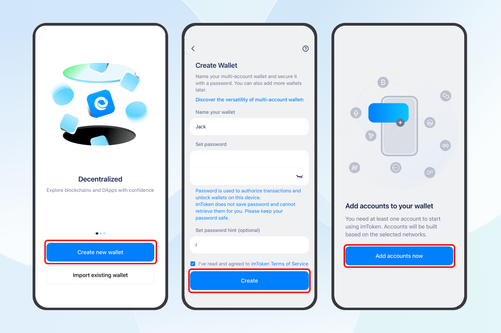
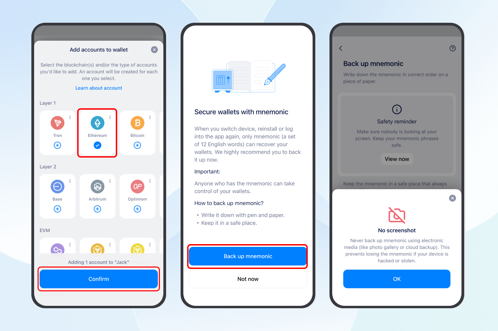
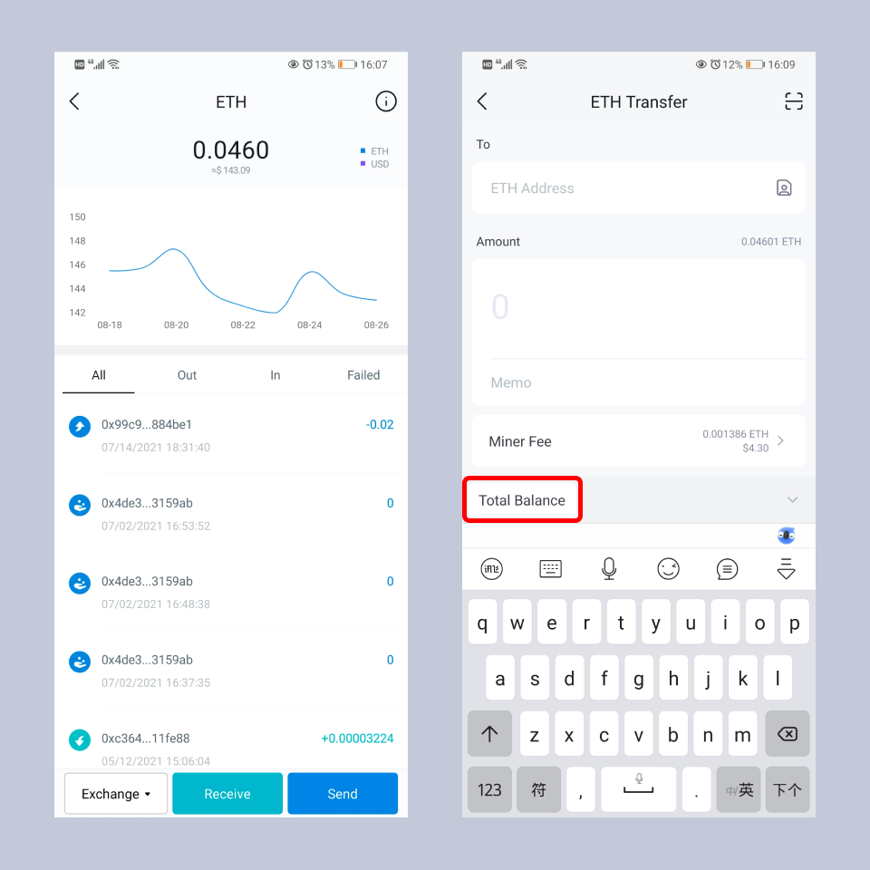

If you have downloaded and used a fake imToken app created by scammers, your tokens could be stolen at any time. Transfer them as soon as possible. If you have two phones available, follow the steps in this guide.
Note: If you only have one phone available, see “How to transfer tokens safely if you only have one phone?”.
Reminder: Three common mistakes can leave your tokens at risk even after you transfer them. These are explained at the end of this article. Follow each step carefully.
Prepare two phones:
- Original phone: Has the fake wallet app installed. Treat its wallets as at risk.
- New phone: Used to download the official imToken app and create a new wallet.
1. Download the official imToken app on your new phone
Download and install imToken from its official website: https://token.im. Learn more: How to download imToken safely?
2. Create a new wallet in the official imToken app
Complete the following steps on your new phone.
1. Create a new wallet and add accounts
Open imToken, tap “Create Wallet”, set a wallet name, password, and password hint, then tap “Create”.
Add accounts for the networks where your at-risk wallet holds tokens. For example, if your at-risk ETH account on the original phone holds tokens, select “Ethereum” to add a new ETH account. Learn more: What Is an Account?
Note: If your at-risk wallet holds tokens on multiple networks, add an account for each network in the new wallet and transfer the assets from each one.

2. Back up your new wallet
Follow the on-screen instructions to write down the new wallet’s mnemonic phrase (12 English words) on paper and store it safely. Confirm the words in order, then tap “Next” to finish creating the wallet.

Important: Keep your mnemonic phrase backup offline. The simplest way is to write it down on paper. Do not save it in your photo gallery, notes apps, or similar services. Do not send it through WhatsApp, email, cloud storage, or other online tools. Never take screenshots or photos of it, as this could expose it.
Your mnemonic phrase or private key is the only way to restore your wallet. If you lose it, your tokens cannot be recovered. Keep it safe!
3. Get your new account’s receiving address
Open the ETH account you just created and tap “Receive” to display its address and receiving QR code.
Keep this page open so you can scan the QR code with your original phone. Alternatively, tap “Copy” and send the new account address to your original phone using another method.

3. Transfer your tokens to the new wallet
Use both phones to complete the following steps.
1. Open the at-risk account on your original phone
Open the fake app on your original phone, tap the account name in the top left corner to open “Select Account”, then select the at-risk account holding your tokens. This example uses an at-risk ETH account.
2. Send tokens from the at-risk account
- On the at-risk ETH account homepage, tap “Transfer” and select the token you want to transfer.
- Tap the scan button next to the receiving address field and scan the receiving QR code displayed on your new phone.
- Check that the receiving address is correct, select “Total Balance”, then tap “Next”, pay the network fee, and sign to complete the transfer.
Repeat these steps to transfer the other tokens from the at-risk account to the new account.

Note:
- If your ETH account holds multiple tokens, transfer the other tokens first and ETH last. You need ETH to pay network fees for the remaining transfers.
- Transfers from an ETH account require ETH for network fees. Transfers from a Tron account require TRX to cover Energy and Bandwidth consumption. These fees are collected by the corresponding blockchain network. imToken does not charge any additional fees.
- If your wallet has no ETH or TRX, buy and transfer a small amount from an exchange, then move your tokens as soon as possible.
3. Confirm receipt and uninstall the fake app
After transferring, check the official imToken app on your new phone to confirm that the tokens have arrived.
Check every at-risk account on your original phone to make sure all tokens have been transferred and received in the new accounts.
Once all transfers are complete, uninstall the fake imToken app from your original phone. All wallets and addresses used in the fake app are at risk. Do not import or use them again.
Need help?
If you encounter any issues during the transfer, contact us:
- Email [email protected] and include the wallet address you need help with;
- Visit https://token.im, tap “Help center” in the bottom right corner, then select “Get help” to contact official support.
Wallet addresses are public information and can be shared with support to help investigate an issue. imToken staff will never ask for your mnemonic phrase or wallet password. Do not share this information with anyone.
Common mistakes
Avoid these three mistakes, which can leave your tokens at risk even after you transfer them.
Mistake 1: Importing the at-risk wallet to your new phone and continuing to use It
Why: The wallet’s mnemonic phrase has already been exposed through the fake imToken app. Importing the wallet into the official imToken app on your new phone does not remove the existing security risk.
Create a completely new wallet in the official imToken app on your new phone, then transfer your tokens to the new accounts. Once the transfers are complete, stop using any wallets and addresses used in the fake app.
Mistake 2: Creating a new wallet in the fake app
Why: The fake imToken app also exposes the new wallet’s mnemonic phrase, leaving it at risk.
Download and install the official imToken app from the imToken website on another phone, then create a new wallet in the official app.
Mistake 3: Downloading imToken from an unofficial source again
Why: Apps downloaded through search engines such as Baidu or Quark, links or QR codes shared by friends, or other unofficial sources are not guaranteed to be authentic. You could download another fake imToken app.
Follow these steps to download imToken:
- Enter the official imToken website address, https://token.im, in your browser’s address bar and carefully check the domain name;
- Once you have confirmed that you are on the official website, tap “Try imToken” and select the download option for your phone’s operating system.